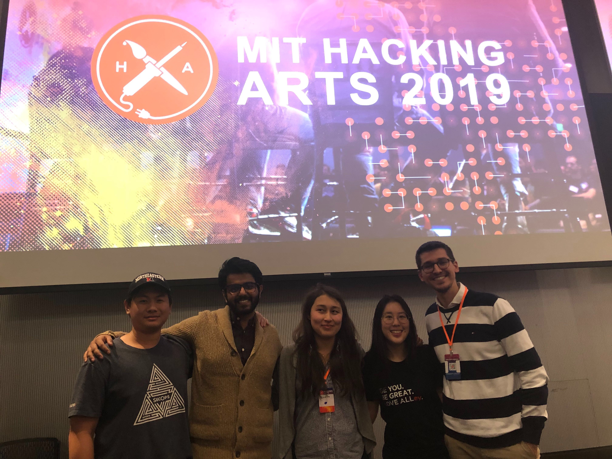

Interests
Tennis
I have played tennis for over 10 years now and love to play it in my free time. I used to compete in junior tennis tournaments and still compete
now through the Northeastern Club Tennis Team.

Photo of me representing Northeastern Club Tennis at the USTA Tennis on Campus 2019 National Championship.
Hackathons
I recently found out about Hackathons and participated in my first in December 2019 at the 2019 MIT Hacking Arts. Although it was mentally and physically fatiguing,
I had a lot of fun meeting new people and working with Virtual Reality. Plus my team was able to win the Hackers' Choice Award!
I am currently registered for HackBeanpot 2020 and look forward to participating in more Hackathons in the future.

Photo of my team at the 2019 MIT Hacking Arts.
Music
Music has always been a part of my life: I started playing the piano since I was 6, the cello since I was 8, and I'm currently learning the guitar. I'm always constantly
listening to music wherever I am and love to listen to all sorts of music.